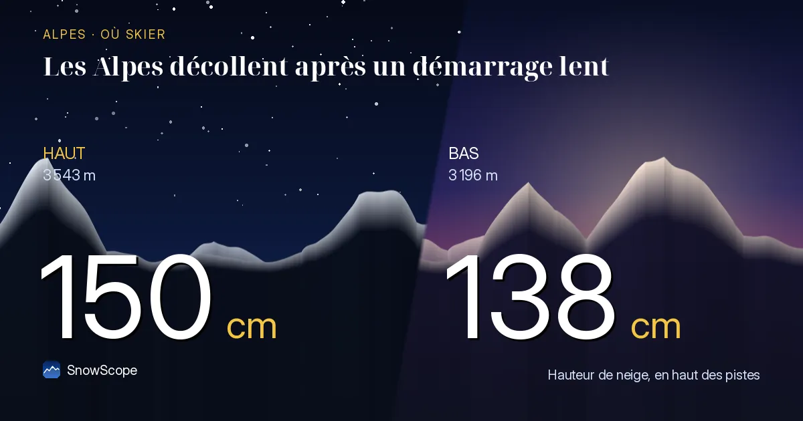
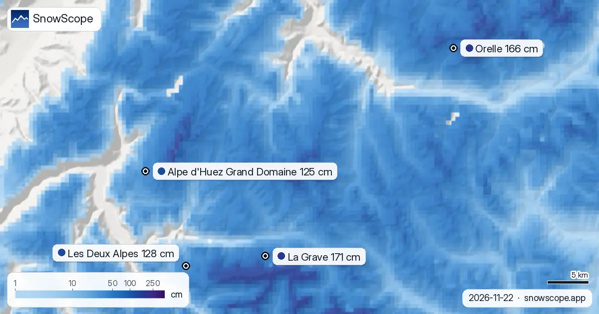

La Grave 171 cm : les Alpes décollent après un démarrage lent
Les versants supérieurs de La Grave conservent 171 cm aujourd'hui, mais c'est toujours seulement 68 % de ce qu'on observe normalement fin novembre. Les fortes chutes d'hier sur les hautes Alpes ont changé la donne : la région a gagné 25 000 km2 de couverture neigeuse en deux jours, et 138 stations de plus disposent désormais d'une base skiable.
Consultez les prévisions neige en temps réel pour La Grave sur l'application SnowScopeHauteurs de neige, alertes poudreuse et carte 3D, gratuitement.
Pourquoi les Alpes accusent du retard
À mi-hauteur sur La Grave, SnowScope estime 56 cm, ce qui ne devance que 13 des 46 années précédentes à cette date. Ce n'est pas une crise, mais cela signifie que la saison a démarré plus lentement que d'habitude.
Le niveau de congélation a joué contre vous. Le 22 novembre, il s'est élevé à 2 880 m, si bien que la pluie est tombée sur les altitudes moyennes. La base d'Alpe d'Huez affiche zéro cm de neige parce que la base se situe à seulement 1 124 m, assez bas pour que la pluie l'atteigne. La neige de début de saison est toujours fine ; les rochers gisent près de la surface aux altitudes plus basses.
| Station | Hauteur de neige | Neige fraîche, 72 h | Attendu, jours suivants | Sommet |
|---|---|---|---|---|
| La Grave | 171 cm | 127 cm | 57 cm | 3 543 m |
| Orelle | 166 cm | 121 cm | 39 cm | 3 221 m |
| Alpe d'Huez Grand Domaine | 125 cm | 123 cm | 57 cm | 3 306 m |
| Les Deux Alpes | 128 cm | 98 cm | 46 cm | 3 511 m |

Où trouver la meilleure neige en ce moment
La Grave domine la région avec 171 cm en versants supérieurs. Orelle est juste derrière avec 166 cm. Les deux stations se situent au-dessus de 3 200 m à leurs pics, si bien qu'elles ont conservé la neige nouvelle de la tempête d'hier sans mélange de pluie. À La Grave, le sommet (3 543 m) affiche 150 cm, le milieu de pente (3 369 m) 147 cm, et la base (3 196 m) 138 cm. Les épaisseurs sont stables sur tout le domaine.
Si vous cherchez de la profondeur, restez en altitude et versants nord. Le niveau de congélation le 22 novembre a oscillé entre 2 570 m et 2 880 m, si bien que la limite entre neige et pluie était nette. Les versants sud à mi-hauteur présentent une couverture humide ou fine. Les versants nord en altitude conservent la neige propre et stable plus longtemps.

Ce qui s'annonce
D'autres chutes sont annoncées. D'ici le 25 novembre, la prévision annonce que 1 153 stations disposeront d'une base skiable, contre 1 104 aujourd'hui. La région gagnera 27 000 km2 de couverture neigeuse supplémentaire. La Grave recevra 57 cm de neige en trois jours, et Orelle 39 cm. Cette amélioration ouvrira davantage de pistes à mi-hauteur et augmentera le plancher de ski dans les stations d'altitude inférieure.
Le niveau de congélation baissera fortement les 23 et 25 novembre, à 2 300 m et 2 350 m respectivement. Cela signifie que plus de chaque chute de neige restera sous forme de neige au lieu de se transformer en pluie. D'ici le week-end prochain, le tableau sera bien meilleur.
Comment cette semaine se compare aux hivers passés
La neige de début novembre est fragile, et la comparaison avec les années passées montre que la région accuse du retard mais sans excès. À 2 397 m sur Les Deux Alpes, 35 cm la place devant 24 années passées. Les pics élevés sont plus proches de la normale car ils reçoivent toujours plus de neige au début de saison.
La tendance est à la hausse. La région est passée de 83 480 km2 de couverture neigeuse le 20 novembre à 108 680 km2 aujourd'hui. Ce gain de 30 000 km2 en deux jours est le type de changement qui compte pour ouvrir du domaine et améliorer les conditions.
Conseils pratiques pour les prochains jours
Privilégiez les pistes damées en versants supérieurs jusqu'à ce que la base s'étoffe davantage. La Grave et Orelle ont la profondeur pour skier en confiance au-dessus de 3 200 m ; les stations d'altitude inférieure ont toujours des rochers près de la surface. Les versants nord offriront la meilleure qualité de neige et la couverture la plus durable. Surveillez le niveau de congélation les 23 et 24 novembre—s'il dépasse 2 500 m, la pluie atteindra même les versants sud à mi-hauteur, alors programmez vos descentes à plus haute altitude pour ces journées-là.
Conseils aux skieurs
- Skiez La Grave et Orelle au-dessus de 3 200 m ; la profondeur y est et la neige est propre. La base d'Alpe d'Huez (1 124 m) affiche zéro cm de neige, alors commencez vos descentes à 2 215 m ou plus haut.
- Privilégiez les versants nord. Ils se débarrassent de la pluie plus vite et conservent la neige de printemps plus longtemps. Les versants sud à mi-hauteur sont plus fins et peuvent être humides en fin d'après-midi les jours chauds.
- Consultez le site de la station pour les ouvertures de remontées et l'état des pistes. Les opérations en début de saison sont souvent limitées.
- Si vous prévoyez du hors-piste, consultez le bulletin officiel d'avalanche. La neige de début de saison peut être instable, et la base fine signifie que les rochers et les souches sont des obstacles.
- Revenez dans quatre jours si vous êtes flexible. D'ici le 25 novembre, 39 à 57 cm de neige supplémentaire tomberont, et le niveau de congélation sera bien plus bas. Les stations à mi-hauteur offriront un meilleur ski.
À propos de ces chiffres
Les hauteurs de neige des stations sont la neige la plus épaisse sur le haut du domaine à la date indiquée ; ce sont des estimations pour une zone, pas une mesure en un point. Les prévisions peuvent changer. Consultez toujours le bulletin d'avalanche officiel avant le hors-piste.
Bulletins d'avalanche officiels: EAWS (Alps)
Citer ce bulletin
Pour la recherche, l'enseignement ou la presse : chiffres et graphiques réutilisables librement sous CC BY 4.0 avec cette citation.
SnowScope (2026), La Grave 171 cm : les Alpes décollent après un démarrage lent, https://snowscope.app/blog/fr/2026/11/alps-where-to-ski-best-snow-22-november-2026.html, consulté le 2026-11-22
SnowScope (Atlas Labs). (2026, November 22). La Grave 171 cm : les Alpes décollent après un démarrage lent. SnowScope snow reports. https://snowscope.app/blog/fr/2026/11/alps-where-to-ski-best-snow-22-november-2026.html
BibTeX
@misc{snowscope2026alpswheretoskibestsnow22,
author = {{SnowScope (Atlas Labs)}},
title = {La Grave 171 cm : les Alpes décollent après un démarrage lent},
year = {2026},
month = nov,
howpublished = {\url{https://snowscope.app/blog/fr/2026/11/alps-where-to-ski-best-snow-22-november-2026.html}},
note = {Published 2026-11-22 12:59 UTC; accessed 2026-11-22}
}· CC BY 4.0 · Méthodes, données et outils →
La Grave : neige et température selon l'altitude, cet hiver vs l'hiver dernier (outils) →
Suivre La Grave
Gratuit : un message quand la neige arrive, et la météo chaque matin.
Autres bulletins neige

Nous avons comparé la neige du jour dans 3 stations dans les Alpes avec la même date lors de chacun des 46 hivers passés. 0 sont nettement au-dessus …

Les 2 Alpes culmine à 3 511 m pour de la neige abondante en décembre 2026, avec un forfait adulte 6 jours à 266,50 EUR.